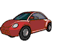
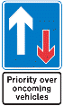

|
 previous / next column
A PHYSICIST WRITES . . .
(April 2009)
What an enjoyable series of columns [in the Thames Valley Group Newsletter] is 'My First Car'! I've learnt from Bruce Thompson and Richard Porter that at Bristol University there must have been much motor-club activity of which I was quite unaware, when I was there just before them, in the early 60s. Me, I rode a single-gear bicycle everywhere for three years in that hilly city. The university physics department was at one of its highest points, hence I've never been fitter than I was then.
Then last month Hilary Winterbottom told us about her first drives in a Morris 1000, and about the first vehicle she later owned: a new 1100. Well, my first car was a Morris 1000, as I recounted a few years ago. And when it died (in 1968) I too acquired a Morris 1100 ... so may I be allowed to write about My Second Car?
On the rare occasions now when an 1100 comes into view, the oddest feature of the car to my eyes is its flat sloping rear end, making it almost a hatch-back ahead of its time, except that only the boot lid rises. How my car zipped along (using its Hydrolastic suspension to smooth out the bumps in the road), compared with the old 1000. But eventually the engine needed a decoke. I forget what the symptoms were exactly, and I would never attempt such a job now, but in those days I fancied myself as a mechanic. First I detached everything from the cylinder head. The next task - still etched in my memory - was to lift it from the engine block.
Most cylinder heads, I guess, are held down by simple bolts. But with the 1100 engine at least, lengths of threaded studding were screwed into the block through the head, which was then fixed in place with nuts on the visible ends of the studs. I was able to remove all the nuts, but then I discovered that the head still wouldn't lift off, being firmly joined by corrosion to one of the studs!
Can you picture the situation after I managed to unscrew all the other studs? There was room to rotate the cylinder head and thus unscrew the offending stud, just a little way, which raised the head enough for me to insert a loose hacksaw blade in the gap and attack the stud. (Having engineered the gap, though, why didn't I first try to hammer the head back down on to the block, to loosen it from the stud - this would surely have worked.)
I don't know how long it took me to saw through, but at last I held the head aloft in triumph. The two halves of the stud didn't offer much resistance after that, and I can't remember having great difficulties with the decoke itself. I needed to go out and buy a replacement stud of course. However, a couple of miles into my first run afterwards there was a bang from the engine! As I recall, something mysterious had put a bend into one of the valve push-rods. So I had to replace that too.
A year or so later, I began to sense that the steering wheel was rising - and indeed the whole car - relative to the driving seat. In reality the floor pan on which the seat rested was rusting away (this became a common problem with 1100s). I constructed a metal framework to raise the seat and restore my view of the surroundings, but I knew this was only postponing the inevitable. So I switched soon to a delightful Vauxhall HA Viva, and then later to an HB...
Now: do you remember I said in February that I had seen a round "Give Way to Oncoming Vehicles" sign (let's call it a GW for short) fixed upside down? The black arrow was pointing up, the red arrow down. This was on a road bypassing Petworth in West Sussex. Gas-pipe diggings in the town meant that I had to use the road several times. Gradually I got to grips with an extraordinary sequence of road signs.
On this narrow road there are four 'priority' sections: three intended to favour N-bound traffic, and one giving priority to S-bound. Two of the gaps between the sections are very short. And there's worse: whichever sign marks the start of a section - either the rectangular "Priority Over Oncoming Vehicles" (PO) sign, or else the round GW, depending on which way you're going - you see it again at the end of the section, plus its printed instruction plate repeated below, and then an END plate below that. By the final END your head is spinning.
?? 
As I say, it was the inverted GW sign that I spotted first, at the end of one of the sections. But something else seemed wrong too. Then it dawned on me: at the start of the same section there was a GW sign on the left of the road and a PO on the right! I hadn't noted them simultaneously before, in spite of the road being narrow.
Later still, I realized that drivers coming the other way were seeing a priority sign in their favour too - a recipe for collision! And having passed this, there was nothing then to indicate the end of the section to them. Yet another problem nearby was a red-triangle sign announcing a sharp bend, but facing towards the bend instead of away from it.
I reported this chaotic signage to W Sussex County Council via their website three times, giving more details as I grasped them. Then a lady from the council left me a phone message. She had gone out to inspect the road, and she could confirm that my first GW sign was on its head and the PO sign facing the wrong way. She had issued instructions for them to be put right. But alas, she was leaving the department soon, and could only hope that the work would be carried out.
Well, the good news is that the GW and PO signs have indeed now been turned around (though not the triangle). The bad news - for the council - is that I have been looking at the official Traffic Signs Manual for local authorities, plus the regulations that back it up. It's clear that at the end of any priority section of road, you should not be faced with the printed instruction plate repeated, just the double-arrow sign again and the END plate below it.
Also, when my particular PO sign was turned to point the right way, an END plate should have been attached to it. And various signs are out of order elsewhere too, on my regular route through the county. Hello again, W Sussex County Council...
Peter Soul
previous / next column
|